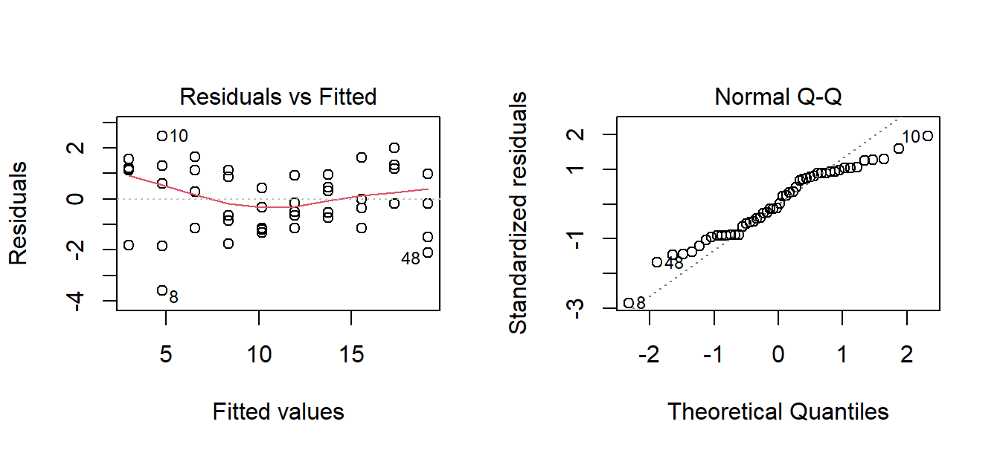

modelo <- lm(tiempo_ms ~ n, data = mac)
summary(modelo)
#>
#> Call:
#> lm(formula = tiempo_ms ~ n, data = mac)
#>
#> Residuals:
#> Min 1Q Median 3Q Max
#> -3.5981 -1.1344 -0.0755 1.1246 2.4619
#>
#> Coefficients:
#> Estimate Std. Error t value Pr(>|t|)
#> (Intercept) 1.189e+00 3.943e-01 3.016 0.00409 **
#> n 1.794e-03 6.355e-05 28.236 < 2e-16 ***
#> ---
#> Signif. codes: 0 '***' 0.001 '**' 0.01 '*' 0.05 '.' 0.1 ' ' 1
#>
#> Residual standard error: 1.291 on 48 degrees of freedom
#> Multiple R-squared: 0.9432, Adjusted R-squared: 0.942
#> F-statistic: 797.3 on 1 and 48 DF, p-value: < 2.2e-1612 Inferencia en regresión
AdvertenciaCapítulo en revisión
El contenido de este capítulo está completo, pero todavía no pasa por la revisión final de redacción. Se avisará en clase cuando quede listo para estudiar de aquí. Mientras tanto se puede consultar, con esa advertencia.
TipObjetivos del capítulo
- Probar si la pendiente de una recta de regresión difiere de cero.
- Probar la significancia del coeficiente de correlación.
- Leer por completo la salida de
summary(lm()), incluido el \(R^2\). - Diagnosticar los residuos y reconocer cuándo el modelo lineal no es adecuado.
En el Capítulo 3 ajustamos una recta y la usamos para describir una relación. Ahora la sometemos a inferencia: la pendiente que calculamos viene de una muestra, así que cabe preguntarse si la relación es real o si pudo surgir del azar. Con esto cerramos el curso, y el capítulo abre además la puerta hacia el aprendizaje automático.
12.1 El modelo y su parámetro
El modelo de regresión lineal simple supone que, en la población,
\[Y = \beta_0 + \beta_1 X + \varepsilon, \qquad \varepsilon \sim N(0, \sigma^2)\]
Es decir: la relación media entre \(X\) e \(Y\) es una recta, y cada observación se aparta de ella por un error aleatorio \(\varepsilon\) de media cero y varianza constante.
Lo que calculamos con lm() son \(b_0\) y \(b_1\), estimaciones muestrales de \(\beta_0\) y \(\beta_1\). La pregunta central es sobre la pendiente:
- \(H_0: \beta_1 = 0\) (no hay relación lineal: \(X\) no ayuda a predecir \(Y\))
- \(H_1: \beta_1 \neq 0\)
12.2 La salida completa de lm()
Trabajemos con los tiempos de ejecución del algoritmo en el entorno Mac:
Vale la pena leer esta salida por partes, porque contiene casi todo el curso:
La tabla de coeficientes. Cada renglón trae la estimación, su error estándar, el estadístico \(t\) y el valor p. Para n (la pendiente), la estimación es aproximadamente 0.00179 ms por elemento, con \(t \approx 28\) y un valor p del orden de \(10^{-31}\): rechazamos \(H_0\) contundentemente, hay relación lineal.
El intercepto vale unos 1.19 ms y también resulta significativo; representa el costo fijo del algoritmo, independiente del tamaño de entrada.
Residual standard error (≈ 1.29 ms) estima \(\sigma\): la dispersión típica de los puntos alrededor de la recta.
R-squared (≈ 0.943) es el coeficiente de determinación: la proporción de la variabilidad de \(Y\) explicada por el modelo. Aquí, el 94 % de la variación en los tiempos se explica por su relación lineal con el tamaño de entrada.
ImportanteLa relación entre \(r\) y \(R^2\)
En regresión lineal simple, el coeficiente de determinación es exactamente el cuadrado del coeficiente de correlación:
\[R^2 = r^2\]
Conviene tenerlo presente porque los dos números se confunden con facilidad. Si un estudio reporta \(r = 0.86\), entonces \(R^2 = 0.86^2 \approx 0.74\): el modelo explica cerca del 74 % de la variabilidad, no el 86 %. Y como \(R^2\) nunca supera a \(|r|\), el porcentaje explicado siempre es menor que la correlación.
Dos precisiones más sobre su lectura. Primera: \(R^2\) mide variabilidad explicada por la relación lineal, no aciertos ni probabilidad de que el modelo sea correcto. Segunda: explicar no es causar; un \(R^2\) alto en datos observacionales sigue sin autorizar conclusiones causales.
r <- cor(mac$n, mac$tiempo_ms)
c(r = r, r_al_cuadrado = r^2, R2_del_modelo = summary(modelo)$r.squared)
#> r r_al_cuadrado R2_del_modelo
#> 0.9711912 0.9432124 0.9432124El estadístico F al final prueba la significancia global del modelo. En regresión simple es redundante: equivale exactamente al cuadrado del \(t\) de la pendiente.
confint(modelo)
#> 2.5 % 97.5 %
#> (Intercept) 0.39633015 1.982069853
#> n 0.00166669 0.001922255
NotaInterpretación
El intervalo de confianza de la pendiente va aproximadamente de 0.00167 a 0.00192 ms por elemento. Redacción para un lector técnico: “Cada elemento adicional en la entrada añade entre 1.67 y 1.92 microsegundos al tiempo de ejecución (95 % de confianza).”
Como el intervalo no contiene al cero, sabíamos de antemano que la prueba iba a rechazar \(H_0\): son, otra vez, dos caras de la misma moneda (Capítulo 8). Y como siempre, el intervalo es más informativo porque cuantifica el efecto.
12.2.1 Laboratorio: la incertidumbre de la pendiente
La recta ajustada depende de la muestra que se obtuvo. Aquí se ve cuánto: cada línea gris es la recta ajustada a una muestra distinta de la misma población. Los deslizadores de ruido y de tamaño de muestra abren o cierran el abanico.
NotaInterpretación
El abanico de rectas grises es la distribución muestral de la pendiente, dibujada. Al subir el ruido, el abanico se abre: con datos muy dispersos, la pendiente estimada es poco confiable. Al subir el tamaño de muestra, el abanico se cierra alrededor de la recta verdadera.
Con la pendiente verdadera en 0, ruido alto y \(n\) pequeño, aparecen rectas grises con inclinaciones visibles hacia arriba y hacia abajo, ¡aunque en la población no haya ninguna relación! Ese es exactamente el riesgo que la prueba de hipótesis nos protege: distinguir una pendiente real de una que el azar dibujó.
12.2.2 El mismo cálculo a mano
Retomemos los cinco puntos con los que se calculó la recta a mano en el Sección 3.3.1, ahora para obtener la incertidumbre de la pendiente:
| \(x\) (miles) | 1 | 2 | 3 | 4 | 5 |
|---|---|---|---|---|---|
| \(y\) (ms) | 3.1 | 4.8 | 6.4 | 8.3 | 9.9 |
De allá se traen \(S_{xx} = 10\) y la recta \(\hat{y} = 1.37 + 1.71x\).
Paso 1. Los valores ajustados y los residuos. Se evalúa la recta en cada \(x\) y se resta:
| \(x\) | \(y\) | \(\hat{y}\) | \(y - \hat{y}\) |
|---|---|---|---|
| 1 | 3.1 | 3.08 | +0.02 |
| 2 | 4.8 | 4.79 | +0.01 |
| 3 | 6.4 | 6.50 | −0.10 |
| 4 | 8.3 | 8.21 | +0.09 |
| 5 | 9.9 | 9.92 | −0.02 |
Paso 2. La varianza residual. Se suman los residuos al cuadrado y se divide entre \(n - 2\) (se pierden dos grados de libertad por haber estimado \(\beta_0\) y \(\beta_1\)):
\[SCE = \sum (y_i - \hat{y}_i)^2 = 0.019, \qquad s^2 = \frac{SCE}{n-2} = \frac{0.019}{3} = 0.00633\]
Paso 3. El error estándar de la pendiente.
\[s_{\hat{\beta}_1} = \sqrt{\frac{s^2}{S_{xx}}} = \sqrt{\frac{0.00633}{10}} = 0.02517\]
Paso 4. El estadístico, con la estructura de siempre:
\[t = \frac{\hat{\beta}_1}{s_{\hat{\beta}_1}} = \frac{1.71}{0.02517} = 67.9\]
Con \(n - 2 = 3\) grados de libertad, el valor crítico bilateral al 5 % es 3.182. Como \(67.9 \gg 3.182\), se rechaza \(H_0: \beta_1 = 0\).
xs <- c(1, 2, 3, 4, 5)
ys <- c(3.1, 4.8, 6.4, 8.3, 9.9)
summary(lm(ys ~ xs))
#>
#> Call:
#> lm(formula = ys ~ xs)
#>
#> Residuals:
#> 1 2 3 4 5
#> 0.02 0.01 -0.10 0.09 -0.02
#>
#> Coefficients:
#> Estimate Std. Error t value Pr(>|t|)
#> (Intercept) 1.37000 0.08347 16.41 0.000492 ***
#> xs 1.71000 0.02517 67.95 7.02e-06 ***
#> ---
#> Signif. codes: 0 '***' 0.001 '**' 0.01 '*' 0.05 '.' 0.1 ' ' 1
#>
#> Residual standard error: 0.07958 on 3 degrees of freedom
#> Multiple R-squared: 0.9994, Adjusted R-squared: 0.9991
#> F-statistic: 4617 on 1 and 3 DF, p-value: 7.024e-06
NotaInterpretación
Coinciden: pendiente 1.71, error estándar 0.0252 y \(t = 67.9\).
La fórmula del error estándar merece atención, porque explica qué hace que una pendiente sea confiable:
\[s_{\hat{\beta}_1} = \sqrt{\frac{s^2}{S_{xx}}}\]
En el numerador está \(s^2\), la dispersión de los puntos alrededor de la recta: más ruido, pendiente menos confiable. En el denominador está \(S_{xx}\), la dispersión de los valores de \(x\): cuanto más separados estén los \(x\), más precisa es la pendiente. Esto último no es evidente y tiene una consecuencia práctica de diseño. Al planear un experimento conviene tomar mediciones en un rango amplio de \(x\), no concentrarlas. Dos puntos de apoyo muy separados determinan una recta con mucha más firmeza que dos puntos juntos.
Es, otra vez, el mismo esqueleto de todo el curso: un estimador dividido entre su error estándar. Lo único que cambia entre técnicas es cómo se calcula ese error.
12.3 Prueba para el coeficiente de correlación
Probar \(H_0: \rho = 0\) (correlación poblacional nula) es equivalente a probar que la pendiente es cero. Ambas preguntas son “¿hay relación lineal?”.
cor.test(mac$n, mac$tiempo_ms)
#>
#> Pearson's product-moment correlation
#>
#> data: mac$n and mac$tiempo_ms
#> t = 28.236, df = 48, p-value < 2.2e-16
#> alternative hypothesis: true correlation is not equal to 0
#> 95 percent confidence interval:
#> 0.9495284 0.9836342
#> sample estimates:
#> cor
#> 0.9711912
NotaInterpretación
El coeficiente de correlación es \(r \approx 0.97\) y su prueba da el mismo estadístico \(t\) y el mismo valor p que la pendiente. No es coincidencia: son formulaciones distintas de la misma hipótesis. La correlación aporta además el intervalo de confianza para \(\rho\).
Cuidado con el reflejo de sobreinterpretar: un \(r\) alto indica relación lineal fuerte, pero sigue sin implicar causalidad (Capítulo 3), y tampoco garantiza que la recta sea el modelo correcto (eso lo dicen los residuos).
12.4 Diagnóstico de residuos
Los supuestos del modelo se verifican en los residuos, no en los datos crudos. Son cuatro, y hay una gráfica para cada uno.
par(mfrow = c(1, 2))
plot(modelo, which = 1) # linealidad y varianza constante
plot(modelo, which = 2) # normalidad de los errores
par(mfrow = c(1, 1))
shapiro.test(residuals(modelo))
#>
#> Shapiro-Wilk normality test
#>
#> data: residuals(modelo)
#> W = 0.96426, p-value = 0.1341
ImportanteLos cuatro supuestos y cómo se ven cuando fallan
- Linealidad. En la gráfica de residuos contra ajustados no debe haber patrón. Una curva en forma de U indica que la relación real no es lineal.
- Varianza constante (homocedasticidad). El ancho de la nube debe ser parejo. Una forma de embudo indica que la dispersión crece con el valor ajustado; se corrige transformando \(Y\) o usando errores robustos.
- Normalidad de los errores. Los puntos del Q-Q plot deben seguir la recta. Es el supuesto menos crítico con muestras grandes, gracias al TCL.
- Independencia. No hay gráfica que la salve: depende del diseño. Con datos tomados en el tiempo, hay que revisar que no haya autocorrelación.
En nuestro caso los residuos insinúan una curvatura muy leve (los datos se generaron con un pequeño término cuadrático) que ilustra por qué esta gráfica no es un trámite. Es la que nos avisa de que el modelo lineal podría estar simplificando de más.
12.5 Predicción y sus límites
Con el modelo ajustado se puede predecir, pero con dos advertencias:
nuevos <- data.frame(n = c(5000, 12000))
predict(modelo, newdata = nuevos, interval = "prediction")
#> fit lwr upr
#> 1 10.16156 7.539685 12.78344
#> 2 22.72287 19.973320 25.47243
ImportanteNo extrapoles
El primer valor (\(n = 5000\)) está dentro del rango observado: la predicción es razonable. El segundo (\(n = 12000\)) queda fuera del rango con el que se ajustó el modelo (1000 a 10000). R lo calcula sin protestar, pero nada garantiza que la relación siga siendo lineal más allá de lo observado — de hecho, sabemos que hay una curvatura leve que se acentuaría.
Nótese también la diferencia entre el intervalo de confianza (para la media de \(Y\) dado \(X\)) y el de predicción (para una observación individual): este último es mucho más ancho, porque debe incluir la variabilidad individual además de la incertidumbre de la recta.
12.6 Hacia el aprendizaje automático
Este capítulo es la frontera del curso, y conviene decir hacia dónde sigue el camino.
La regresión lineal es el modelo predictivo más simple, y muchas ideas del aprendizaje automático son extensiones suyas: agregar varias variables explicativas da la regresión múltiple; cambiar la respuesta a categórica da la regresión logística; penalizar los coeficientes da ridge y lasso.
Pero hay una diferencia de énfasis que vale la pena señalar. En estadística clásica nos preocupa si los coeficientes son significativos y si los supuestos se cumplen, porque queremos entender el fenómeno. En aprendizaje automático interesa sobre todo qué tan bien predice el modelo en datos nuevos, y para eso se usa validación cruzada más que valores p.
Las dos miradas se necesitan. Al evaluar cualquier modelo predictivo, el diagnóstico de residuos visto en este capítulo sigue siendo la herramienta para detectar que algo va mal: errores con estructura, varianza que crece, valores atípicos influyentes. Saber leer esas gráficas es lo que distingue a quien entrena modelos de quien los valida.
Tip¿Qué técnica usar?
Con dos variables cuantitativas y una pregunta inferencial:
| Mi pregunta | Herramienta en R |
|---|---|
| ¿La relación lineal es real? | summary(lm(y ~ x)), valor p de la pendiente |
| ¿Cuánto cambia \(Y\) por unidad de \(X\)? | confint(modelo) |
| ¿Qué tan fuerte es la relación? | \(R^2\) del modelo, o cor.test() |
| ¿El modelo lineal es adecuado? | plot(modelo): residuos y Q-Q plot |
| ¿Cuánto vale \(Y\) para un \(X\) nuevo? | predict(modelo, newdata, interval = "prediction") |
Nunca debe reportarse una regresión sin haber mirado sus residuos.
12.7 Resumen
La recta ajustada proviene de una muestra, así que su pendiente tiene incertidumbre. La prueba sobre \(\beta_1\) decide si la relación lineal es real, y su intervalo de confianza dice cuánto cambia \(Y\) por unidad de \(X\); probar la correlación es la misma prueba con otro nombre. El \(R^2\) resume qué proporción de la variabilidad explica el modelo, y el diagnóstico de residuos (linealidad, varianza constante, normalidad, independencia) es lo que decide si el modelo merece confianza. Predecir fuera del rango observado es extrapolar, y eso es cosa de fe, no de estadística.
12.8 Cierre del curso
Con esto termina el recorrido. A lo largo de los once capítulos se fue construyendo, recuadro a recuadro, una guía para elegir la técnica correcta según el tipo de pregunta y el tipo de datos: el mapa de decisión, que se encuentra completo en el ?sec-mapa. Y las fórmulas de todos los procedimientos vistos están reunidas en el ?sec-formulario.
Tres reglas valen para todo lo que se hizo aquí:
- Mirar los datos antes de calcular. Una gráfica dice si la técnica tiene sentido.
- Verificar los supuestos. Un valor p calculado sobre supuestos rotos no significa nada.
- Interpretar en el lenguaje del problema. Fuera de esta clase, a nadie le interesa el estadístico \(t\): les interesa saber si las galletas gustan distinto, si el tratamiento sirve, cuánto tarda el algoritmo.
12.9 Ejercicios
Modelo completo. Ajustar la regresión para el entorno Windows y reportar: pendiente, su intervalo de confianza, \(R^2\) y la conclusión de la prueba.
Comparar pendientes. Contrastar la pendiente de Windows con la de Mac. ¿Cuál entorno se degrada más rápido al crecer la entrada? ¿Se traslapan sus intervalos de confianza?
Equivalencia. Verificar en la salida de
summary(lm())que el estadístico \(F\) es igual al cuadrado del \(t\) de la pendiente. Explicar por qué.Diagnóstico. Graficar los residuos del modelo de Windows. ¿Se observa algún patrón? ¿Qué supuesto quedaría en duda?
Interpretación de \(R^2\). El modelo tiene \(R^2 \approx 0.94\). ¿Cuál de estas lecturas es correcta?
- El 94 % de las predicciones son correctas.
- El 94 % de la variabilidad en los tiempos se explica por el tamaño de entrada.
- Hay 94 % de probabilidad de que el modelo sea correcto.
Predicción y extrapolación. Predecir el tiempo para \(n = 3000\) y para \(n = 50000\). ¿Cuál predicción confiarías y por qué?
Laboratorio. En el Sección 12.2.1, poner la pendiente verdadera en 0, el ruido en 5 y \(n\) en 8, y observar el abanico de rectas. ¿Qué le ocurriría a quien ajustara una sola de esas muestras sin hacer prueba de hipótesis?
Síntesis del curso. Para cada situación, indicar qué técnica del mapa de decisión usarías:
- Comparar la satisfacción promedio de estudiantes de tres carreras.
- Ver si el género está asociado con la elección de optativa.
- Estimar el porcentaje de egresados empleados, con margen de error.
- Evaluar si un nuevo método de enseñanza mejora las calificaciones frente al tradicional, con grupos asignados al azar.
TipSoluciones y retroalimentación
1. Con summary(lm(tiempo_ms ~ n, data = filter(alg, entorno == "Windows"))): pendiente ≈ 0.00212 ms por elemento, intervalo aproximado de 0.00197 a 0.00228, \(R^2 \approx 0.94\), y un valor p del orden de \(10^{-31}\). Conclusión: existe una relación lineal fuerte y altamente significativa entre el tamaño de entrada y el tiempo. Conviene reportar la pendiente con su intervalo, no solo el valor p. El intervalo es lo que permite comparar entornos.
2. La pendiente de Windows (0.00212) es mayor que la de Mac (0.00179): Windows se degrada más rápido al crecer la entrada. Sus intervalos —aproximadamente (0.00197, 0.00228) contra (0.00167, 0.00192)— no se traslapan, lo que sugiere que la diferencia es real. Advertencia metodológica: comparar intervalos “a ojo” es una aproximación informal. La forma rigurosa es ajustar un modelo con interacción, lm(tiempo_ms ~ n * entorno), y probar directamente si el término de interacción difiere de cero. Es un buen puente hacia la regresión múltiple.
3. \(F = t^2\): aquí \(28.24^2 \approx 797\). La razón es que en regresión simple solo hay una variable explicativa, así que “¿el modelo global sirve?” y “¿la pendiente es distinta de cero?” son la misma pregunta. La equivalencia se rompe en regresión múltiple. Ahí el \(F\) global prueba si al menos una de las variables aporta, mientras que cada \(t\) prueba una variable en particular.
4. Los residuos de Windows muestran la misma curvatura leve que los de Mac, porque ambos conjuntos se generaron con un pequeño término cuadrático. El supuesto en duda es la linealidad: la relación real tiene una componente curva que el modelo lineal no captura. Con datos de tiempos de ejecución esto es esperable. Muchos algoritmos tienen complejidad superlineal, así que un término en \(n^2\) o un modelo en escala logarítmica podría ajustar mejor. Este es justo el tipo de hallazgo para el que sirve mirar los residuos.
5. La correcta es la (b). La (a) confunde \(R^2\) con una tasa de acierto —concepto que ni siquiera aplica a una respuesta continua—; la (c) le atribuye una probabilidad al modelo, que no es lo que mide. Otra advertencia sobre \(R^2\): un valor alto no garantiza que el modelo sea adecuado. Se pueden tener datos claramente curvos con \(R^2\) elevado; por eso el diagnóstico de residuos es indispensable, no opcional.
6. La predicción para \(n = 3000\) es confiable. Está dentro del rango observado (1000 a 10000). La de \(n = 50000\) es una extrapolación cinco veces más allá del máximo observado: el modelo la calcula, pero no hay evidencia de que la relación siga siendo lineal tan lejos, y la curvatura detectada en los residuos sugiere que el tiempo real crecería más rápido de lo predicho. Regla práctica: predice dentro del rango de los datos; fuera de él, se está haciendo un supuesto no verificado y conviene decirlo explícitamente.
7. Vería una recta con pendiente aparente (a veces positiva, a veces negativa) y podría concluir que existe una relación que en realidad no existe (la pendiente verdadera es cero). Sin prueba de hipótesis no hay forma de distinguir una señal real del ruido, y con \(n\) pequeño y mucho ruido el azar dibuja tendencias convincentes. Esta es la razón de ser de todo el bloque de inferencia: nuestros ojos encuentran patrones en el ruido con demasiada facilidad, y la estadística es el antídoto contra esa tendencia.
8. (a) ANOVA de un factor con post-hoc de Tukey (Capítulo 11): una cuantitativa comparada entre tres grupos. (b) Prueba ji-cuadrada de independencia (Capítulo 10): dos variables categóricas. (c) Intervalo de confianza para una proporción (Capítulo 10), con prop.test. (d) Prueba t de dos muestras independientes (Capítulo 9) sobre un experimento aleatorizado (Capítulo 5); como hubo asignación al azar, aquí sí es válido hablar de causa. Nótese que responder bien requiere identificar dos cosas: el tipo de variable y el número de grupos. Ese es, en el fondo, todo el mapa de decisión.